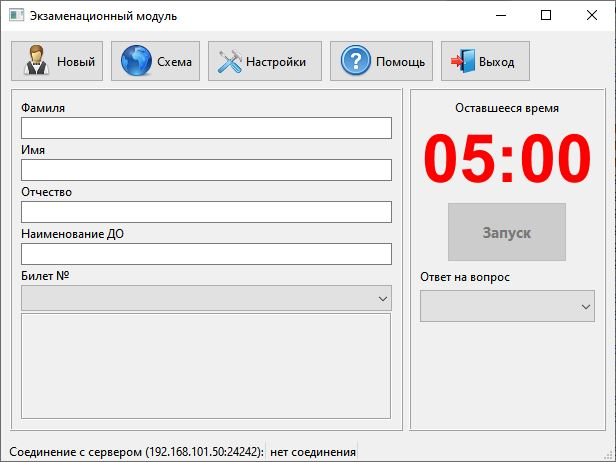
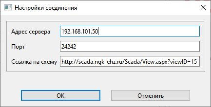
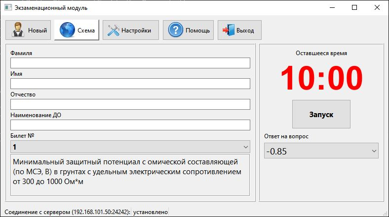

Модуль «Экзамен» (далее Модуль) предназначен для проверки знаний и тренировки в подборе оптимальных выходных токов СКЗ для учебного Стенда. В Модуле реализованы следующие функции:

После запуска необходимо проверить настройки соединения. Нажать кнопку «Настройка». Адрес и порт для соединения должны соответствовать указанным в окне «Экзамен» ПО «Эгида». Ссылка на схему указаывается для открытия в браузере и работы со стендом серез него.

Если параметры корректные, происходит автоматическое соединение с сервером, о чем сообщается в нижней части окна. Если соединение не произошло, нужно проверить работу локальной сети и добиться соединения. Во время соединения клиент получает время длительности экзамена. (Здесь указано 05:00 - 300 секунд, как установлено руководителем в настройках).
Экзаменуемый заполняет сведения о себе. Выбирает номер билета и ответ на свой вопрос из списка справа. Нажимает кнопку «Запуск». Начинается обратный отсчет времени, за которое он должен выставить на стенде оптимальные токи для выбранного им потенциала в ответе.

В окне руководителя появляются данные об экзамене со статусом «Идет экзамен». Когда оптимальные токи выставлены, экзаменуемый нажимает кнопку «Завершить». D случае окончания отсчета времени экзамен заканчивается. У руководителя всплывает окно с предварительными результатами и статус меняется на «Экзамен завершен». Для начала следующего экзамена нужно нажать кнопку «Новый». Далее все действия повторить.